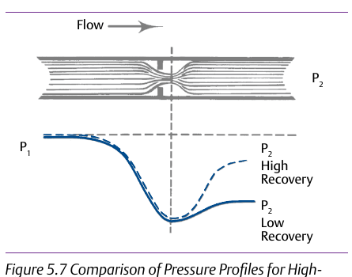

The Assumption That Was Backwards

- 1What matters for cavitation is the drop between P1 and the vena contracta specifically, not the overall ΔP. A high-recovery design has less internal turbulence and dissipates less energy, so more of the total pressure drop shows up right at the vena contracta itself
- 2The source states it directly: “High-recovery valves tend to be more subject to cavitation, since the vena contracta pressure is lower and more likely to reach down to the liquid's vapor pressure” — less energy dissipated overall is exactly why the local low point is more severe
- 3Case C's streamlined trim (page 12) was chosen for Cv efficiency and space — the higher-recovery option, at an 80%-of-P1 pressure drop, exactly the wrong one
Control Valve Handbook, 6th ed., §5.14.1 and Figure 5.7 “Comparison of Pressure Profiles for High- and Low-Recovery Valves,” pp.128–129. Component Index: cvh-topic-flow-recovery, cvh-cmp-pressure-profile-high-low-recovery.